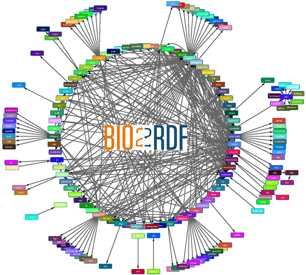

Wei Hu, Honglei Qiu, Michel Dumontier. Link Analysis of Life Science Linked Data. In: ISWC 2015
Semantic Web technologies offer a promising mechanism for the representation and integration of thousands of biomedical databases. Many of these databases provide cross-references to other data sources, but they are generally incomplete and error-prone. In this paper, we conduct an empirical link analysis of the life science Linked Data, obtained from the Bio2RDF project. Three different link graphs for datasets, entities and terms are characterized using degree distribution, connectivity, and clustering metrics, and their correlation is measured as well. Furthermore, we analyze the symmetry and transitivity of entity links to build a benchmark and preliminarily evaluate several entity matching methods. Our findings indicate that the life science data network can help identify hidden links, can be used to validate links, and may offer the mechanism to integrate a wider set of resources for biomedical knowledge discovery.
Semantic Web technologies offer a promising mechanism for the representation and integration of thousands of biomedical databases. Many of these databases provide cross-references to other data sources, but they are generally incomplete and error-prone. In this paper, we conduct an empirical link analysis of the life science Linked Data, obtained from the Bio2RDF project. Three different link graphs for datasets, entities and terms are characterized using degree distribution, connectivity, and clustering metrics, and their correlation is measured as well. Furthermore, we analyze the symmetry and transitivity of entity links to build a benchmark and preliminarily evaluate several entity matching methods. Our findings indicate that the life science data network can help identify hidden links, can be used to validate links, and may offer the mechanism to integrate a wider set of resources for biomedical knowledge discovery.
Methodologies

We conduct an empirical link analysis of the life science Linked Data, obtained from the Bio2RDF project, in three perspectives:
- Dataset link analysis, which provides the statistics of datasets and their links to other datasets based on the RDF data model;
- Entity link analysis, which captures the status and intended semantics of links between entities using a special kind of cross-references in Bio2RDF;
- Term link analysis, which measures the overlap of topics between terms (i.e. classes and properties) by ontology matching.